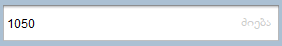

ჩამოწერა
თუ მაღაზიაში გვაქვს რეალიზაციისთვის უვარგისი პროდუქცია, ვადაგასული, დაზიანებული ან და პროდუქცია მოგვპარეს საჭიროა, რომ ასეთი პროდუქციის ჩამოწერა დავაფიქსიროთ , როგორც პროგრამულად ასევე შემოსავლების სამსახურში. ვადაგასულ პროდუქციას ხშირ შემთხვევაში იბრუნებენ მომწოდებლები, მაგრამ არიან მომწოდებლები რომლებთაც არ აქვთ დაბრუნება და შესაბამისად როდესაც პროდუქციას გასდის ვადა ანაზღაურება(ზარალი) გვეკუთნის ჩვენ.
პროდუქციის ჩამოსაწერად უნდა გადავიდეთ ჩამოწერის ფანჯარაში.
ძიება შესაძლებელია მხოლოდ კოდით, დასახელებით ვერ მოვძებნით პროდუქციას, ჩავწეროთ პროდუქციის კოდი ან შტრიხკოდი და ავირჩიოთ ჩამოსაწერი პროდუქცია.
არჩევის შემდეგ ჩამოწერის ფანჯარაში გადმოიტანს პროდუქციას. რაოდენობაში ვწერთ რამდენი ერთეული პროდუქციის ჩამოწერაც გვსურს. თვითღირებულება მითითებულია, შესაბამისად ჯამს , ანუ დანაკლისს, პროგრამა დაგვითვლის ავტომატურად. ამის შემდეგ დავაჭიროთ მწვანე პლუსს , პროგრამა მიანიჭებს დოკუმენტის ნომერს და დავაჭიროთ შესრულებას. ჩამოწერის დროს თუ მომწოდებელთან ხელშეკრულება გვაქვს რეალიზაციებით, პროგრამა ჩამოწერის ჯამს დაიანგარიშებს და დაითვლის მომწოდებლის დავალიანებაში.